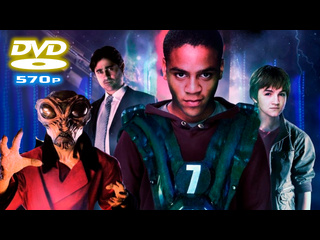
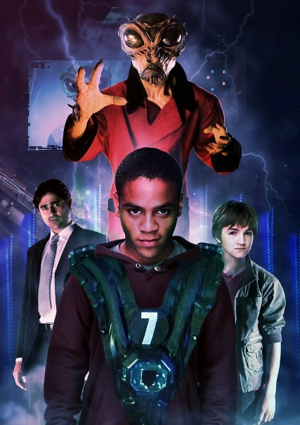

Warriors of Kudlak
Дата выхода: 15-22 октября 2007
Формат: 2 эпизода по 30 мин.
| Варианты озвучек: | * Разные: смотрите по инструкции |
|---|---|
| Скачивание и просмотр: |
Сара Джейн начинает расследование таинственной пропажи детей, какая сила стоит за исчезновениями? Смогут ли Люк и Клайд дойти до финиша в новой игре Combat 3000? И кем на самом деле является загадочный Мистер Кудлак?
